- 00 开篇词 你为什么应该学好软件工程？.md.html
- 01 到底应该怎样理解软件工程？.md.html
- 02 工程思维：把每件事都当作一个项目来推进.md.html
- 03 瀑布模型：像工厂流水线一样把软件开发分层化.md.html
- 04 瀑布模型之外，还有哪些开发模型？.md.html
- 05 敏捷开发到底是想解决什么问题？.md.html
- 06 大厂都在用哪些敏捷方法？（上）.md.html
- 07 大厂都在用哪些敏捷方法？（下）.md.html
- 08 怎样平衡软件质量与时间成本范围的关系？.md.html
- 09 为什么软件工程项目普遍不重视可行性分析？.md.html
- 10 如果你想技术转管理，先来试试管好一个项目.md.html
- 11 项目计划：代码未动，计划先行.md.html
- 12 流程和规范：红绿灯不是约束，而是用来提高效率.md.html
- 13 白天开会，加班写代码的节奏怎么破？.md.html
- 14 项目管理工具：一切管理问题，都应思考能否通过工具解决.md.html
- 15 风险管理：不能盲目乐观，凡事都应该有B计划.md.html
- 16 怎样才能写好项目文档？.md.html
- 17 需求分析到底要分析什么？怎么分析？.md.html
- 18 原型设计：如何用最小的代价完成产品特性？.md.html
- 19 作为程序员，你应该有产品意识.md.html
- 20 如何应对让人头疼的需求变更问题？.md.html
- 21 架构设计：普通程序员也能实现复杂系统？.md.html
- 22 如何为项目做好技术选型？.md.html
- 23 架构师：不想当架构师的程序员不是好程序员.md.html
- 24 技术债务：是继续修修补补凑合着用，还是推翻重来？.md.html
- 25 有哪些方法可以提高开发效率？.md.html
- 26 持续交付：如何做到随时发布新版本到生产环境？.md.html
- 27 软件工程师的核心竞争力是什么？（上）.md.html
- 28 软件工程师的核心竞争力是什么？（下）.md.html
- 29 自动化测试：如何把Bug杀死在摇篮里？.md.html
- 30 用好源代码管理工具，让你的协作更高效.md.html
- 31 软件测试要为产品质量负责吗？.md.html
- 32 软件测试：什么样的公司需要专职测试？.md.html
- 33 测试工具：为什么不应该通过QQ微信邮件报Bug？.md.html
- 34 账号密码泄露成灾，应该怎样预防？.md.html
- 35 版本发布：软件上线只是新的开始.md.html
- 36 DevOps工程师到底要做什么事情？.md.html
- 37 遇到线上故障，你和高手的差距在哪里？.md.html
- 38 日志管理：如何借助工具快速发现和定位产品问题 ？.md.html
- 39 项目总结：做好项目复盘，把经验变成能力.md.html
- 40 最佳实践：小团队如何应用软件工程？.md.html
- 41 为什么程序员的业余项目大多都死了？.md.html
- 42 反面案例：盘点那些失败的软件项目.md.html
- 43 以VS Code为例，看大型开源项目是如何应用软件工程的？.md.html
- 44 微软、谷歌、阿里巴巴等大厂是怎样应用软件工程的？.md.html
- 45 从软件工程的角度看微服务、云计算、人工智能这些新技术.md.html
- 一问一答第1期 30个软件开发常见问题解决策略.md.html
- 一问一答第2期 30个软件开发常见问题解决策略.md.html
- 一问一答第3期 18个软件开发常见问题解决策略.md.html
- 一问一答第4期 14个软件开发常见问题解决策略.md.html
- 一问一答第5期 22个软件开发常见问题解决策略.md.html
- 学习攻略 怎样学好软件工程？.md.html
- 特别放送 从软件工程的角度解读任正非的新年公开信.md.html
- 结束语 万事皆项目，软件工程无处不在.md.html
29 自动化测试：如何把Bug杀死在摇篮里？
你好，我是宝玉。前不久我所在项目组完成了一个大项目，把一个网站前端的 jQuery 代码全部换成 React 代码，涉及改动的项目源代码文件有一百多个，变动的代码有几千行，最终上线后出乎意料的稳定，只有几个不算太严重的 Bug。
能做到重构还这么稳定，是因为我们技术水平特别高吗？当然不是。还是同样一组人，一年前做一个比这还简单的项目，上线后却跟噩梦一样，频繁出各种问题，导致上线后不停打补丁，一段时间才逐步稳定下来。
这其中的差别，只是因为在那次失败的上线后，我们总结经验，逐步增加了自动化测试代码的覆盖率。等我们再做大的重构时，这些自动化测试代码就能帮助我们发现很多问题。
当我们确保每一个以前写好的测试用例能正常通过后，就相当于把 Bug 杀死在摇篮里，再配合少量的人工手动测试，就可以保证上线后的系统是稳定的。
其实对于自动化测试，我们专栏已经多次提及，它是敏捷开发能快速迭代很重要的质量保障，是持续交付的基础前提。
所以今天我将带你一起了解什么是自动化测试，以及如何在项目中应用自动化测试。
为什么自动化测试能保障质量？
自动化测试并不难理解，你可以想想人是怎么做测试的：首先根据需求写成测试用例，设计好输入值和期望的输出，然后按照测试用例一个个操作，输入一些内容，做一些操作，观察是不是和期望的结果一致，一致就通过，不一致就不通过。
自动化测试，就是把这些操作，用程序脚本来完成的，本质上还是要输入和操作，要检查输出是不是和期望值一致。只要能按照测试用例操作和检查，其实是人来做还是程序来做，结果都是一样的。
不过，自动化测试有一个手工测试没有的优势，那就是可以直接绕过界面，对程序内部的类、函数进行直接测试，如果有一定量的自动化测试代码覆盖，相对来说软件质量是更有保障的。
而且，一旦实现了自动化，每测试一次的成本其实大幅降低了的，几百个测试用例可能几分钟就跑完了。尤其是每次修改完代码，合并到主干之前，把这几百个测试用例跑一遍，可以有效地预防“修复一个 Bug 而产生新 Bug”的情况发生。
但现阶段，自动化测试还是不能完全代替手工测试的，有些测试，自动化测试成本比手工测试成本要高，比如说测试界面布局、颜色等，还是需要一定量的手工测试配合。
有哪些类型的自动化测试？
现在说到自动化测试，已经有很多的概念，除了大家熟悉的单元测试，还有像集成测试、UI 测试、端到端测试、契约测试、组件测试等。而很多时候同一个名字还有不同的解读，很容易混淆。
在对自动化测试类型的定义方面，Google 的分类方法我觉得比较科学：根据数据做出决策，而不仅仅是依靠直觉或无法衡量和评估的内容。Google 将自动化测试分成了三大类：小型测试、中型测试和大型测试。
假设我们有一个网站，是基于三层架构（如下图所示），业务逻辑层的类叫 UserService 类，数据访问层的类叫 UserDA，我们将以用户注册的功能来说明几种测试的区别 。
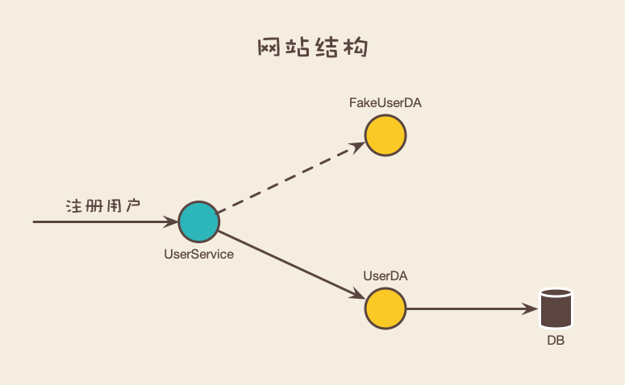
小型测试
小型测试是为了验证一个代码单元的功能，例如针对一个函数或者一个类的测试。我们平时说的单元测试就是一个典型的小型测试。
比如说 UserService 这个类，有一个注册用户的函数，现在要对它写一个单元测试代码，那么看起来就像下面这样：
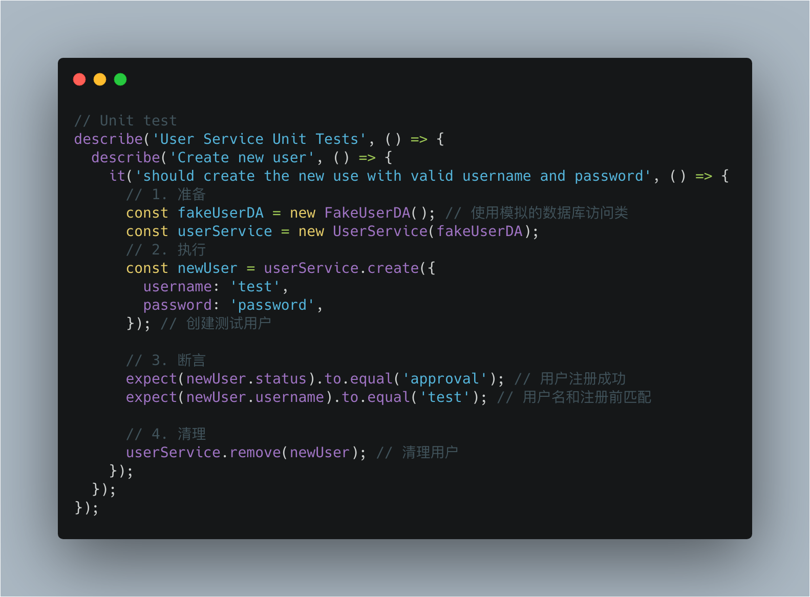
通过这样的测试代码，就可以清楚的知道 UserService 类的 create 这个函数是不是能正常工作。
小型测试的运行，不需要依赖外部。如果有外部服务（比如文件操作、网络服务、数据库等），必须使用一个模拟的外部服务。比如上面例子中我们就使用了 FakeUserDA 这个模拟的数据库访问类，实际上它不会访问真实的数据库。这样可以保证小型测试在很短时间内就可以完成。
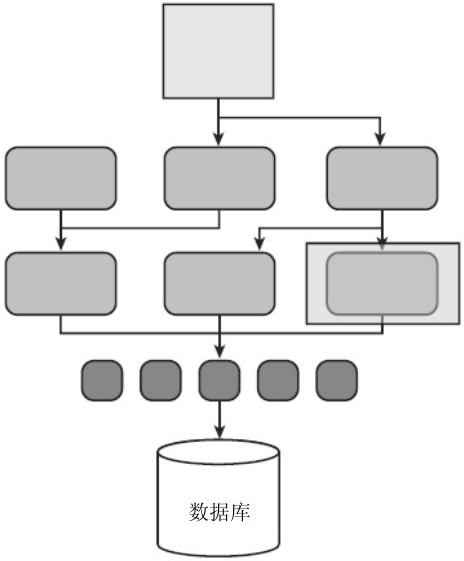
小型测试，图片来源：《Google软件测试之道》
中型测试
中型测试是验证两个或多个模块应用之间的交互，通常也叫集成测试。
如果说要对用户注册的功能写集成测试，那么就会同时测试业务逻辑层的 UserService 类和数据访问层的 UserDA 类。如下所示：
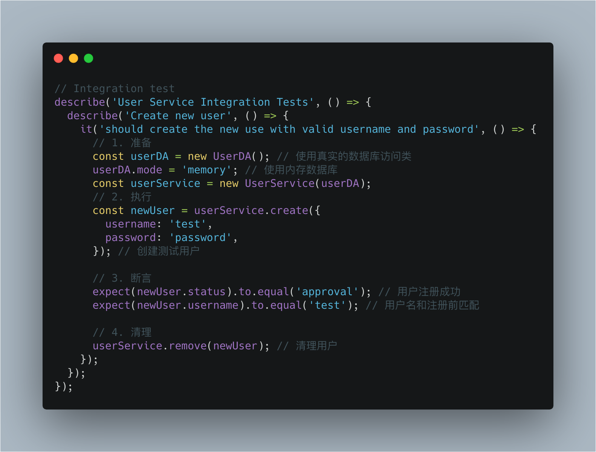
对于中型测试，可以使用外部服务（比如文件操作、网络服务、数据库等），可以模拟也可以使用真实的服务。比如上面这个例子，就是真实的数据库访问类，但是用的内存数据库，这样可以提高性能，也可以减少依赖。
至于中型测试要不要使用模拟的服务，有个简单的标准，就是看能不能在单机情况下完成集成测试，如果可以就不需要模拟，如果不能，则要模拟避免外部依赖。

中型测试，图片来源：《Google软件测试之道》
大型测试
大型测试则是从较高的层次运行，把系统作为一个整体验证。会验证系统的一个或者所有子系统，从前端一直到后端数据存储。大型测试也叫系统测试或者端对端测试。
如果说要对用户注册写一个端对端测试的例子，那么看起来会像这样：
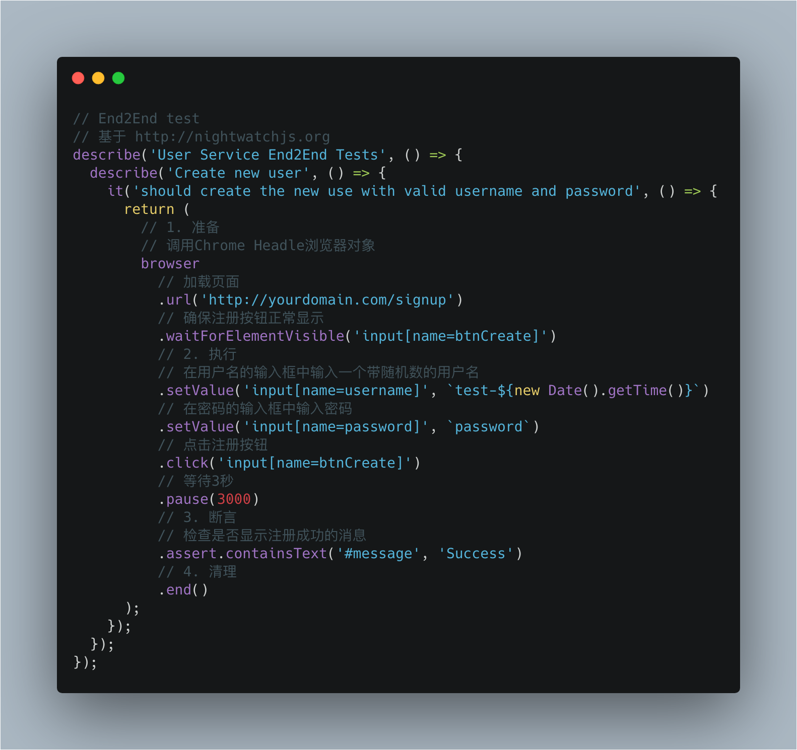
对于大型测试，通常会直接使用外部服务（比如文件操作、网络服务、数据库等），而不会去模拟。比如上面这个例子，就是直接访问测试环境的地址，通过测试库提供的 API 操作浏览器界面，输入测试的用户名密码，点击注册按钮，最后检查输出的结果是不是符合预期。
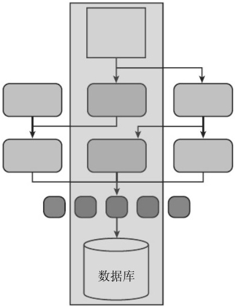
大型测试，图片来源：《Google软件测试之道》
区分测试类型的依据是什么？
以上就是主要的自动测试类型了。捎带着补充一个测试类型，那就是契约测试，这个测试最近出现的频率比较高，主要是针对微服务的。其实就是让微服务在测试时，不需要依赖于引用的外部的微服务，在本地就可以模拟运行，同时又可以保证外部微服务的接口更新时，本地模拟的接口（契约）也能同步更新。对契约服务更多的说明可以参考这篇文章：聊一聊契约测试
那么契约测试，属于大型测试还是中型测试呢？
Google 针对这几种测试类型列了一张表，根据数据给出了明确区分：
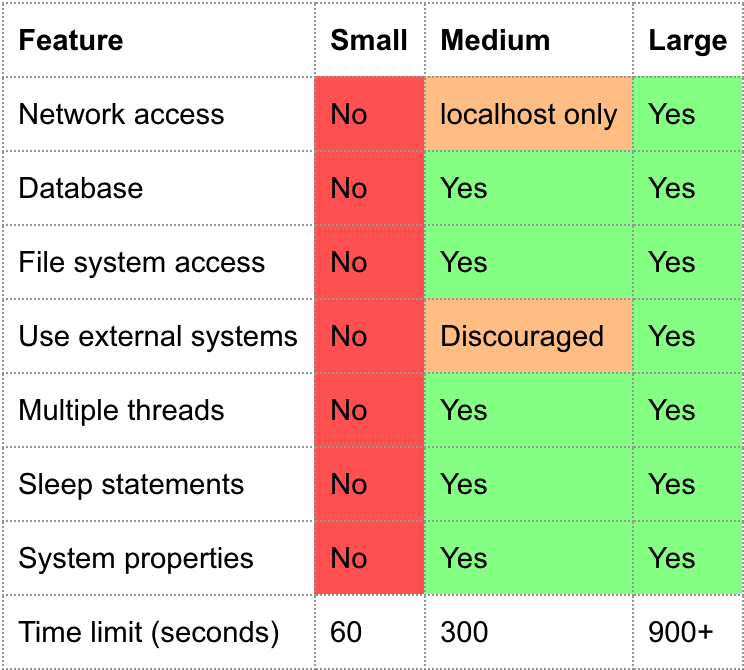
图片来源：Google Testing Blog
结合上面的表格其实就很好区分了：
-
小型测试，没有外部服务的依赖，都是要模拟的；
-
中型测试，所有的测试几乎都不需要依赖其他服务器的资源，如果有涉及其他机器的服务，则本地模拟，这样本机就可以完成测试；
-
大型测试，几乎不模拟，直接访问相关的外部服务。
所以现在你应该就知道契约测试，也是中型测试的一种了，因为它不需要依赖外部服务，本机就可以完成测试。
为什么中型测试这么看重“能单机运行”这一点呢？因为这样才方便在持续集成上跑中型测试，不用担心外部服务不稳定而导致测试失败的问题。
上面的表中还反映出一个事实：**越是小型测试，执行速度越快，越是大型测试，执行速度越慢。**通常一个项目的小型测试，不超过一分钟就能全部跑完，一个中型测试，包括一些环境准备的时间，可能要几分钟甚至更久，而大型测试就更久了。
**另外越是大型测试，写起来的成本也相应的会更高，所以一般项目中，小型测试最多，中型测试次之，大型测试最少。**就像下面这张金字塔图一样。所以我们也常用测试金字塔来区分不同类型的测试粒度。
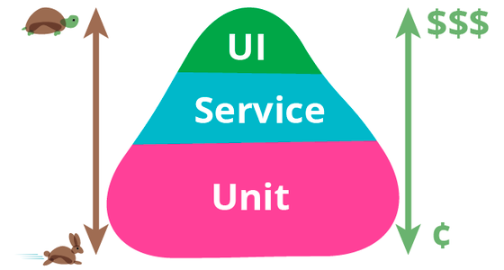
测试金字塔，图片来源： TestPyramid
如果你对测试类型很感兴趣，可以参考测试金字塔实战这篇文章作为补充。
怎么写好自动化测试代码？
很多人认为写自动化测试很复杂，其实测试代码其实写起来不难，包含四部分内容即可，也就是：准备、执行、断言和清理，我再把第一段代码示例贴一下：
第一步就是准备，例如创建实例，创建模拟对象；第二步就是执行要测试的方法，传入要测试的参数；第三步断言就是检查结果对不对，如果不对测试会失败；第四步还要对数据进行清理，这样不影响下一次测试。
上面还有几个测试代码示例，都是这样的四部分内容。
这是针对写一个自动化测试的代码结构。对于同一个功能，通常需要写几个自动化测试才完整。
一个完整的自动化测试要包括三个部分的测试：
-
验证功能是不是正确：例如说输入正确的用户名和密码，要能正常注册账号；
-
覆盖边界条件： 比如说如果用户名或密码为空，应该不允许注册成功；
-
异常和错误处理：比如说使用一个已经用过的用户名，应该提示用户名被使用。
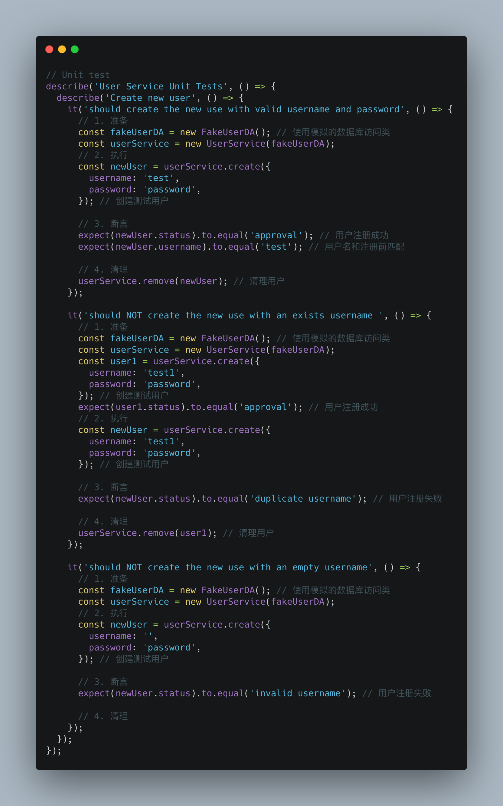
所以你看，写一个测试代码并没有你想的那么复杂，那还有什么理由不去写测试呢？
如何为你的项目实施自动化测试？
现在你了解了有哪些类型的测试，如何写自动化测试代码，也许迫不及待想在项目中实施自动化测试。
选择好自动化测试框架
要写好自动化测试代码，首先要找对自动测试化框架。不同的语言，不同的平台，测试的框架都不一样。好在现在搜索引擎很方便，根据“你的语言 + 自动测试框架”的关键字，就能找到很多的结果。这里我也帮你找了一些，供参考。
- Web 前端
Jest： Facebook 的前端测试框架；
Mocha：历史悠久的一个 JS 测试框架；
Nighwatch: 一个 API 很简单，但是功能很强大，可以直接操作浏览器的自动测试框架。
- iOS 开发
可以参考这篇文章《iOS 自动化测试框架对比》。
- 安卓开发
可以参考这篇文章《Android 谈谈自动化测试》。
在持续集成环境上跑你的自动化测试
选好自动化测试框架后，你的自动化测试代码，其中的小型测试和中型测试，最好要能在持续集成环境上运行起来。
让自动化测试在持续集成上运行非常重要，只有这样才能最大化地发挥自动化测试的作用。
因为持续集成，会强制测试通过才能合并代码，在合并代码之前就能知道测试是不是都通过了，可以帮助程序员获得最直观的反馈，知道哪里可能存在问题，这样才能真正做到防患于未然，把 Bug 杀死在摇篮里。
下图描述的就是自动测试配合持续集成的一个标准流程：
-
在提交代码前，先本地跑一遍单元测试，这个过程很快的，失败了需要继续修改；
-
单元测试成功后就可以提交到源代码管理中心，提交后持续集成服务会自动运行完整的自动化测试，不仅包括小型测试，还有中型测试；
-
通过所有的测试后，就可以合并到主分支，如果失败，需要本地修改后再次提交，直到通过所有的测试为止。
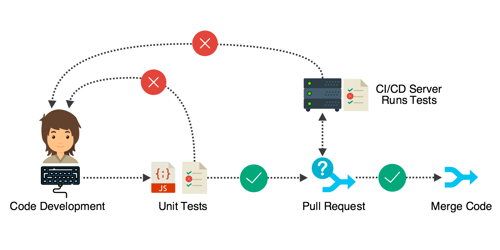
图片来源：Microservice Testing: Unit Tests
新项目和老项目的不同策略
如果是新项目，那么可以在一开始就保持一定的自动化测试代码的覆盖率，你甚至还可以试试测试驱动（TDD）的开发模式，也就是先写测试代码，再写实现代码，保证测试通过，最后对代码进行重构。
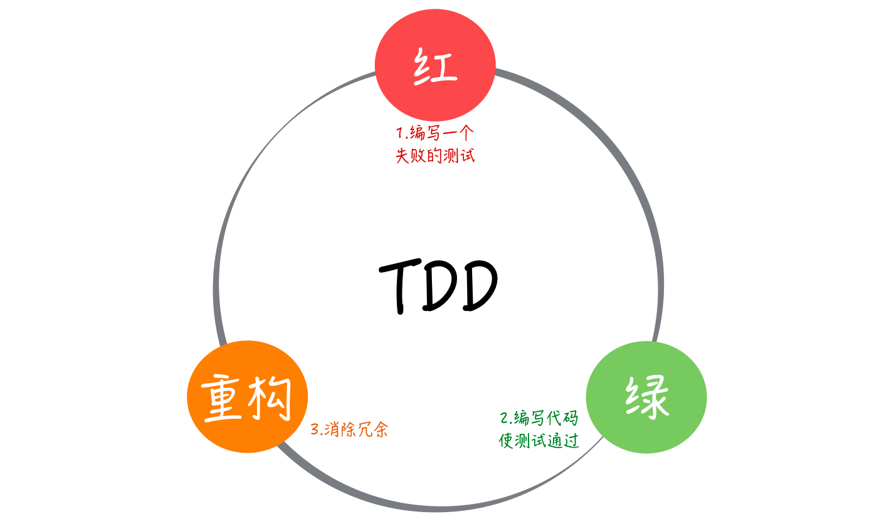
图片来源：郑晔 《10x程序员工作法》专栏
如果是老项目，短期内要让自动化测试代码有覆盖是有难度的，可以先把主要的功能场景的中型测试写起来，这样可以保证这些主要功能不会轻易出问题。
后面在维护的过程中：
-
增加新功能的时候，同步对新功能增加自动化测试代码；
-
修复 Bug 的时候，针对 Bug 补写自动化测试代码。
这样一点一点，把自动化测试代码覆盖率加上去。
如果时间紧任务重，来不及写自动化测试怎么办？
确实遇到时间紧的情况，我建议你要优先保证中型测试代码的覆盖，因为这样至少可以保证主要的用户使用场景是正常的。然后把来不及完成的部分，创建一个 Ticket，放到任务跟踪系统里面，后面补上。
总结
今天我带你一起学习了关于自动化测试有关的知识。自动化测试，分为三类：
-
小型测试，主要针对函数或者类进行验证，不调用外部服务，执行速度快；
-
中型测试，主要验证两个或多个模块应用之间的交互，可能会调用外部服务，尽可能让所有测试能在本机即可完成，执行速度比较快；
-
大型测试，对服务整体进行验证，执行速度慢。
写好单元测试代码，基本结构就是：准备、执行、断言和清理；基本原则就是：
-
要验证正确性；
-
覆盖边界条件；
-
验证是否有异常和错误的处理。
自动化测试，一定要配合好持续集成，才能最大化发挥其效用。
对于自动化测试的实施，开头是最难的，因为需要花时间选择自动化测试框架，需要针对自动化测试框架搭建环境，甚至要去搭建持续集成环境。但搭建持续集成和搭建自动化测试环境，并且保证持续更新维护自动测试代码，这个技术投资，一定是你在项目中最有价值的投资之一。
搭建持续集成环境和集成自动化测试框架的事情，要作为一个正式的项目任务去做，当作一个很重要的任务去推进。